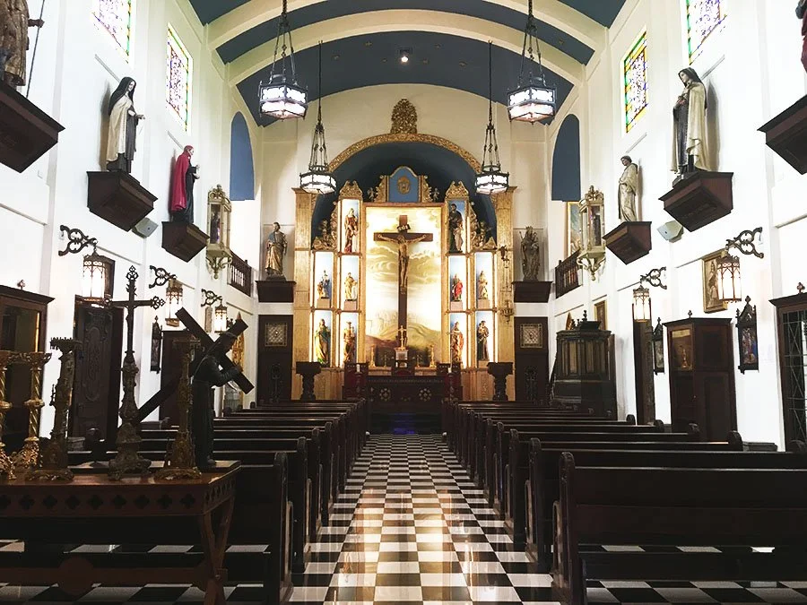
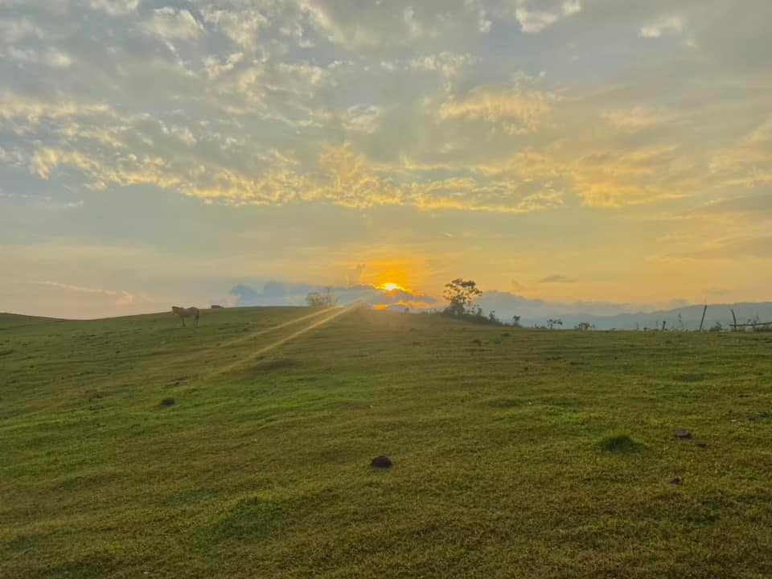
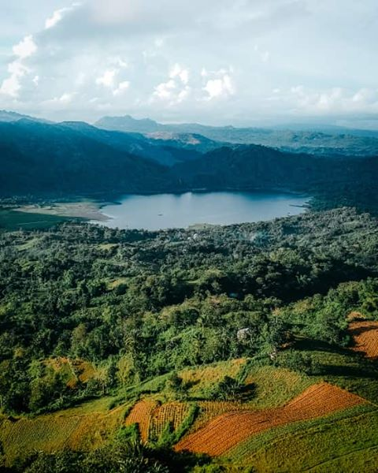

The Story of Toledo City
Understanding where Toledo came from helps us appreciate the city it has become today.
From roots to cityhood.
Toledo's story is one of real transformation — a gold-bearing settlement, then an organized pueblo, and eventually a city built on copper. These are the moments that shaped it.
Hinulawan: Where Gold Was Found
Long before the Spanish colonizers arrived, the settlement was known as Hinulawan — roughly "where gold was found" — named for the rich mineral deposits that early natives gathered directly from the local riverbeds.
Old Hinulawan is founded
Toledo traces its start to 1861. Old Hinulawan, today’s Barangay Daanglungsod, was founded by Mariano Libre, Fulgencio Lebumfacil, Areston Macapaz, Adriano Blanco and Tranquilino Blanco.
Earthquakes destroy Hinulawan
A series of earthquakes toppled the new school and the church facade, then destroyed the church and convent. Seawater and river water flooded the settlement waist-deep, and a third tremor wiped out Pueblo Hinulawan.
New Hinulawan rises on the plateau
Survivors, helped by residents of Barangay Tubod, cleared forest and built cogon-roofed homes on the plateau. Their settlement became New Hinulawan, and some families moved to Da-o, Bulok-bulok, Landahan, Sam-ang, Cabito-onan and Batohanon. To fend off pirates on the Tañon Strait, residents piled a stone baluarte along the shore.
New Hinulawan becomes Toledo
At a banquet in Manila, Cebu alcalde mayor Esteban Perez told Governor-general Carlos María de la Torre that the winding Hinulawan River reminded him of the Tagus in their home city, Toledo, Spain. With Fr. Mariano Brazal, he proposed the new name, and De la Torre approved it on the spot.
Japanese Occupation
During the Second World War, Toledo was captured and occupied by the Japanese Imperial Forces. Its coastal position and mining resources made it a highly guarded asset.
The Liberation
The town became a fierce battleground. Local forces of the Philippine Commonwealth Army — the 8th, 82nd, 83rd, 85th, and 86th Infantry Divisions — teamed up with native Cebuano guerrilla fighters and overwhelmed the Japanese garrison.
The Copper Boom
Massive copper extraction operations transformed the local economy. Mining by Atlas Consolidated Mining and Development Corporation, under Carmen Copper, halted after a flood in 1994 and fully reopened in 2008. The extracted ore is now processed locally and trucked out to the active Sangi Port.
Toledo Becomes a City
Toledo was officially established as a chartered component city of Cebu under Republic Act No. 2688, authored by Congressman Manuel A. Zosa of the old Sixth District of Cebu. The charter law is dated June 18, 1960, and Toledo marks cityhood on June 19.
A shrine for a saint
After Pedro Calungsod, the Visayan teen martyr, was canonized, the hilltop parish of Cantabaco became the first shrine and church named after the second Filipino saint.
The western gate of Cebu island.
Toledo's position on the island is unusual, and it has made the city both distinct and remarkably well connected.
Alone on the west
Almost all of Cebu's major cities — Cebu City, Mandaue, Lapu-Lapu, and Talisay — sit tightly on the eastern coast. Toledo stands uniquely on the western seaboard.
Across the strait
Toledo faces the Tañon Strait directly, acting as a crucial maritime gateway between Cebu and San Carlos City in Negros Oriental through frequent roll-on/roll-off ferry links.
216.28 km²
A spacious city by any measure, Toledo makes up roughly 4.37% of Cebu province's total land area.
Plains to peaks
The city mixes flat coastal plains with a sprawling, rugged, mountainous interior — a landscape reshaped in places by decades of mining.
The copper city with a heart of gold.
Toledo is widely recognized as the industrial muscle of Cebu. Its economic layout is heavily defined by mining, power generation, and maritime trade.
Atlas & Carmen Copper
Toledo is home to the country's largest copper mining infrastructure, operated by Atlas Consolidated Mining and Development Corporation under Carmen Copper.
Powering the Visayas
The city has evolved into a green energy hub for the Visayas grid, hosting Toledo Power Company alongside the Toledo City Solar Farm in Talavera, a 60 MW plant on 73 hectares. Coal plants in Daanglungsod and Bato add to the grid, which earns Toledo the nickname “Power City.”
Beyond the mines
Away from the industrial zones, a large portion of the rural population relies on agriculture — growing corn and coconuts — and on coastal fishing along the resource-rich Tañon Strait.
Sangi Port
The active Sangi Port and the RoRo crossings keep Toledo tied to regional trade routes, moving goods in and out of western Cebu.
Faith, festival, and flavor.
The identity of a Toledano is tied closely to both spiritual devotion and the city's rugged earth.
Hinulawan Festival
Celebrated every June 12, this grand festival pays direct homage to the city's ancient roots. The streets fill with vibrant dancers dressed in golden and metallic hues, celebrating the rich mineral history and the resilient, hardworking nature of its people.
Patron Saint: San Juan de Sahagun
The city honors its patron saint, John of Sahagun, with the official feast day arriving every June 12.
Puto Lancho
A traditional delicacy made of ground sticky rice, perfectly steamed with rich coconut milk and sugar — a must-try for any visitor.
Eco trails, highland views, and old stone.
Toledo offers a highly distinct mix of eco-tourism, high-altitude hiking, and unique religious landmarks.

MUSEUM & GARDENCapilla de Santa Ana & the Labyrinth
A European-style private chapel and museum holding a rare collection of centuries-old religious relics and classical paintings, with a meticulously manicured hedge labyrinth outside.
Explore in Places →
MOUNTAIN DESTINATIONTagaytay Hills
A favorite of local hikers and campers. The rolling green peaks open onto panoramic views of surrounding ranges, nearby lakes, and sunsets toward Mount Kanlaon on Negros Island.
Explore in Places →
LAKES & OUTDOORSLake Bensis & Malubog Lake
Decades of mining shifted the local topography into deep-set basins that filled with water. Lake Bensis is now a secluded mountain campsite, while Malubog Lake offers sweeping vistas and boat trekking.
Explore in Places →Toledo at a glance.
The essentials that define the city, from its official name to the industries that drive it.
City of Toledo
Dakbayan sa Toledo
The Copper City
…with a Heart of Gold
1861
Reorganized as a pueblo
June 19, 1960
Cityhood under RA No. 2688
216.28 km²
About 4.37% of Cebu's land area
38
Barangays across the city
Hinulawan
Primary festival, held every June
Mining & Power
Copper, energy, port shipping, agriculture